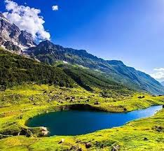
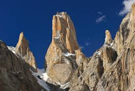
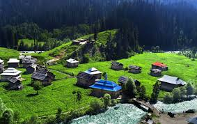
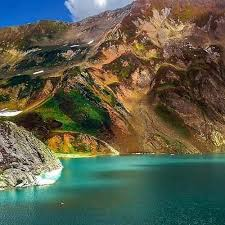

Azad Jammu and Kashmir (AJK) and Gilgit-Baltistan (GB) are two regions of Pakistan that boast breathtaking natural beauty and rich cultural heritage. AJK, located to the northeast of Pakistan, shares a border with the Indian-administered Jammu and Kashmir. It is known for its stunning landscapes, lush green valleys, and serene lakes, such as Neelum Valley and Rawalakot. The region has a diverse culture influenced by Kashmiri, Punjabi, and Mughal traditions, with Urdu and Kashmiri as the main languages spoken. AJK's capital, Muzaffarabad, serves as a cultural and administrative center, and the region is home to several historical sites, including the Red Fort and Pir Chinasi, which draw both tourists and pilgrims.
Gilgit-Baltistan, often referred to as the "Crown of Pakistan," is renowned for its dramatic mountain ranges, including the Karakoram and the Himalayas, housing some of the world's highest peaks, such as K2. The region is a paradise for trekkers and adventurers, offering stunning trekking routes like the Baltoro Glacier and the trek to Fairy Meadows. GB is culturally diverse, with various ethnic groups, including Balti, Shina, and Wakhi, each contributing to the rich tapestry of traditions, languages, and customs. The region’s capital, Gilgit, is a hub for trade and tourism, and it serves as a gateway to some of the most magnificent landscapes on Earth. Both AJK and GB face challenges related to infrastructure and development, but they remain vital to Pakistan’s identity, showcasing the country's natural beauty and cultural richness.
|  |  |  |  |
|---|